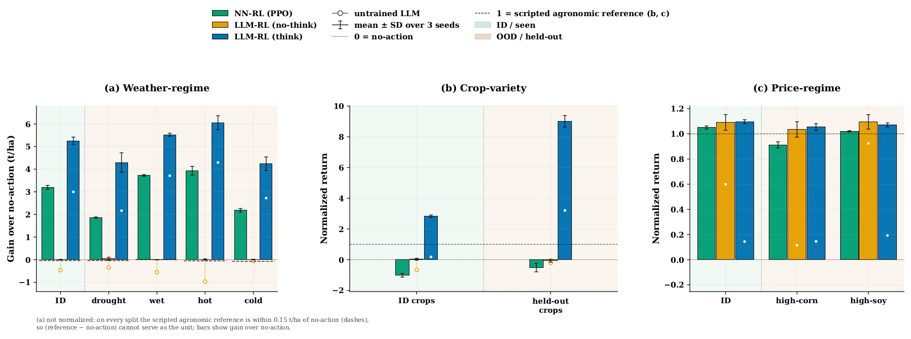
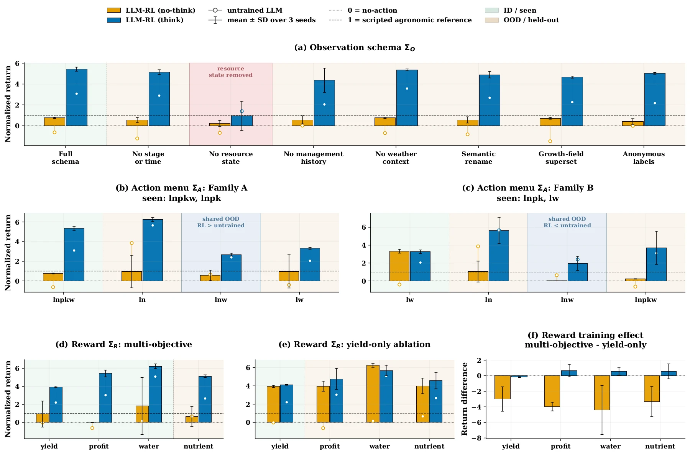
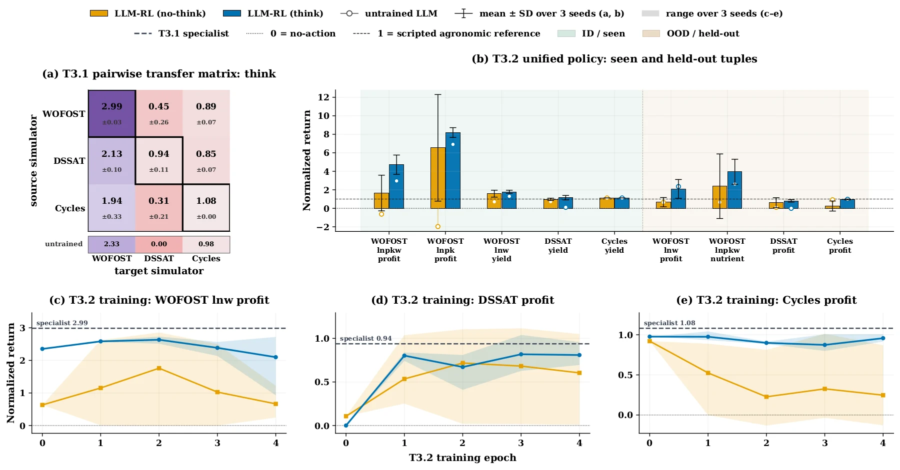

Results
Every number comes from the frozen test suite; hover any chart for exact values.
| Tier | Setting | Models | Training curves | Test set |
|---|---|---|---|---|
| Tier 1Within Schema | T1.1 Weather regime | Models ↗ | Training curves ↗ | Test set ↗ |
| T1.2 Crop variety | Models ↗ | Training curves ↗ | Test set ↗ | |
| T1.3 Price regime | Models ↗ | Training curves ↗ | Test set ↗ | |
| Tier 2Single-Axis Schema | T2.1 Observation schema | Models ↗ | Training curves ↗ | Test set ↗ |
| T2.2 Action menu | Models ↗ | Training curves ↗ | Test set ↗ | |
| T2.3 Objective | Models ↗ | Training curves ↗ | Test set ↗ | |
| Tier 3Compositional Schema | T3.1 Cross-simulator transfer | Models ↗ | Training curves ↗ | Test set ↗ |
| T3.2 Unified policy | Models ↗ | Training curves ↗ | Test set ↗ | |
| Exploratory | Other backbones and RL algorithms | Models ↗ | Training curves ↗ | — |
Held-out conditions, same interface
The interface stays fixed while weather, crop or prices move outside the training range: does the RL-trained policy still beat its own starting point?
- ✓Weather regimeEvery seed above the untrained model on every test split (30 of 30 seed–split pairs); every think seed also above every same-budget PPO seed where a PPO baseline was run.
- ✓Crop varietyEvery seed above the untrained model on every test split (18 of 18 seed–split pairs); every think seed also above every same-budget PPO seed where a PPO baseline was run.
- ✓Price regimeEvery seed above the untrained model on every test split (9 of 9 seed–split pairs); every think seed also above every same-budget PPO seed where a PPO baseline was run.
LLM vs. neural baselines
Think against fixed-interface neural policies trained on the simulator's numeric state, scored on the same test splits.
| Baseline | Weather regime | Crop variety | Price regime |
|---|---|---|---|
| Neural-network PPOsame budget, one gradient pass per batch | Think ahead on 10/10every think seed above every baseline seed on 10/10; +1.16 to +3.54 t/ha | Think ahead on 6/6every think seed above every baseline seed on 6/6; +1.25 to +1.84 t/ha | Think ahead on 1/1every think seed above every baseline seed on 1/1; +$1,456/ha over 19 years |
| A2Cpotato only | Think ahead on 5/5every think seed above every baseline seed on 5/5; +1.16 to +2.83 t/ha | — | — |
| DQNpotato only | Think ahead on 5/5every think seed above every baseline seed on 5/5; +9.07 to +12.30 t/ha | — | — |
Read across a row: how think compares with that baseline in each setting. Ranges are think minus baseline in raw objective (profit-equivalent t/ha; price-regime in $/ha over 19 years), mean over three seeds. With the same budget, every neural baseline stays below think.
What RL changes
The same Qwen3-4B backbone before and after RL on one 19-year Cycles crop-planning scenario from the price-regime test set.
View the paper figure

One part of the interface changes
Each panel changes one schema axis at test time: what the policy observes, which actions it may take, or which objective scores it.
Trained on the full observation, tested on each variant. The full schema scores 5.42; every renamed, added or reduced variant stays at 4.35 or above. Without the resource state the mean falls to 0.94 ± 1.40, below the untrained model (1.39). Bars: mean ± SD over three seeds; tick: the untrained model.
Seeds above the untrained model on held-out menus: Family A ln 3/3, lnw 3/3, lw 3/3; Family B ln 2/3, lnw 1/3, lnpkw 2/3. Consistent with joint action coverage; menu wrappers also differ (paper §4.2).
Masked PPO acts over one shared action vocabulary with a mask for each menu and trains on its family's two training menus; target-trained PPO trains on the test menu itself, a menu-specific reference. Family A is clearly above masked PPO on all four menus and matches or exceeds the target-trained reference (clearly on lnpkw). Family B is ahead of masked PPO in mean but within seed noise, and roughly level with the target-trained reference. Family A: think above masked PPO in mean on 4/4 menus, by 3.2 to 14.4 propagated SD; against target-trained PPO -0.08 to +9.72 SD. Family B: think above masked PPO in mean on 4/4 menus, by 0.1 to 1.0 propagated SD; against target-trained PPO -0.62 to +0.49 SD.
Trained on yield alone, scored under each objective: profit 4.76 vs 3.03 untrained (3/3 seeds above); water 5.68 vs 5.09 untrained (3/3 seeds above); nutrient 4.57 vs 2.66 untrained (3/3 seeds above). Bars: seed mean; tick: the untrained model.
View the paper figure

New simulators and new combinations
Tier 3 asks whether a policy can carry its skill to another simulator, or to a combination of interface components it saw only apart.
Rows: training simulator; columns: test simulator. 4 of 6 cross-simulator cells (orange) fall below the untrained model on that target; compare within a column. Transfers into DSSAT gain only over an untrained model that fails the output format there. Normalized return.
On DSSAT the unified policy closes 86% of the specialist's gain over the untrained model (0.81 vs 0.94, from 0.00). On WOFOST (2.10 vs 2.35) and Cycles (0.96 vs 0.98) it stays below the untrained model. Normalized return, seed means; each row has its own scale.
Scored on the test suite at each epoch. Line: mean of three training seeds; band: seed range. Epoch 0 is the untrained model, epochs 1–3 are intermediate checkpoints (exploratory), epoch 4 is the terminal checkpoint. Dashed: the specialist trained on that exact tuple. 0 = no-action.
Additional insightOn Qwen, reasoning mainly stabilizes RL training; this does not hold for every task or backbone.
View the paper figure

Other backbones and RL algorithms exploratory, one seed
Think and no-think pairs on the unified-policy setting (Tier 3), one training seed per run, from the paper's appendix.
| Backbone | RL algorithm | Think | No-think | ||
|---|---|---|---|---|---|
| peak step | loss | peak step | loss | ||
| Qwen3-4B-Instruct | GRPO | 800 | 0.00 | 200 | 1.32 |
| Qwen3-4B-Instruct | DrGRPO | 800 | 0.00 | 410 | 0.33 |
| Qwen3-4B-Instruct | PPO | 500 | 0.02 | 50 | 0.31 |
| Qwen2.5-3B-Instruct | GRPO | 740 | 0.02 | 360 | 1.53 |
Validation reward averaged over the nine seen and held-out tuples, 80 evaluations per run. Loss = peak minus final value. In all four pairs, think peaks late and keeps nearly all of its peak; no-think peaks early and gives part of it back.
On the test suite its no-think arm leads on four of the five WOFOST tuples. On DSSAT profit both Llama arms score above the Qwen unified think policy: 1.10 (think) and 1.11 (no-think) in normalized return, from a single seed, against 0.81 ± 0.13.
Its training invalid-output rate started at 1.00 and averaged 0.83; the run stopped after 493 of 800 planned steps. The pair does not isolate reasoning from format compliance.
So the reasoning result is stated for the Qwen backbones evaluated.